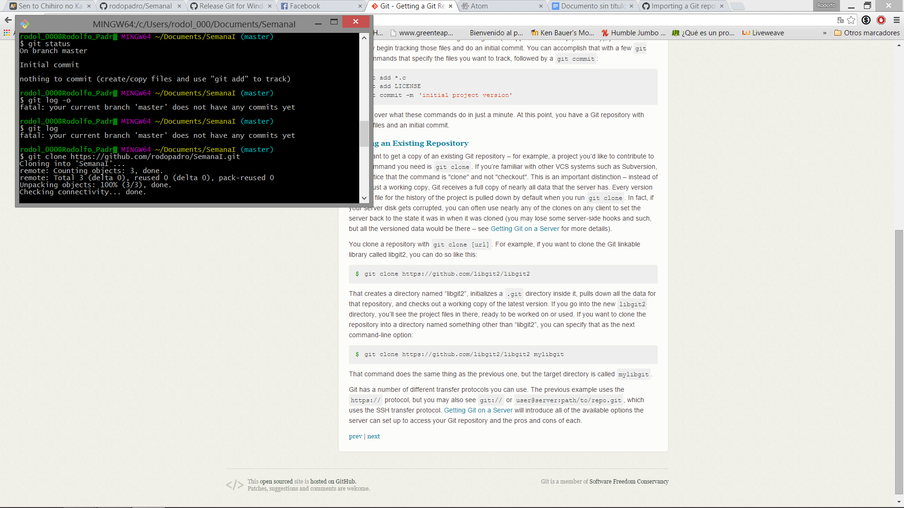
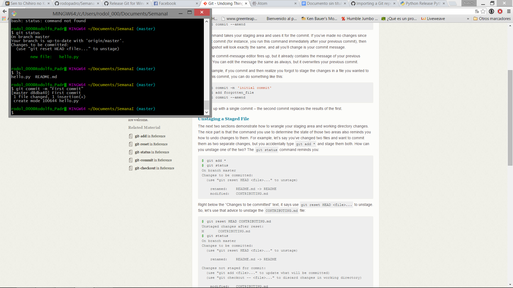

José Rodolfo Padró Valdés - A01228080
Mastering github
Noob Level
- Create GitHub account.
My account is rodopadro. - Create a new GitHub repository form the GitHub web interface.
- Create a local repository on your computer.
- Clone a repository from GitHub to your computer.
 - Add a file to your local repository.


- Remove a file from your local repository.
- Edit a file via the GitHub web interface.
- Add a file via the GitHub web interface.

- Delete a file via the GitHub web interface.
- Pull changes from GitHub to your local repository.
Basic Level
- Check status of your local repository. What are the possible states?
Current status
There are 4 possibles states untracked, unmodified, modified and staged.
- How to view the history or log of your repository. Why is this useful?
- Ensure you understand the states of objects in a repository (untracked, unmodified, modified, staged), see this diagram from the webpage resource at http://git-scm.com/book/en/v2/Git-Basics-Recording-Changes-to-the-Repository
An untracked file is a file that has not been add to the repository, unmodified can be deleted and turn into a untracked or can be edit and changes it state to modified, modified it is a file that has been change but not stage and a stage file after been committed it, changes to unmodified. - Push changes to GitHub from your local repository.
- Pull changes from GitHub to your local repository.
- Create an use Tags at the local repository leve.
- Push and pull tags to the remote (GitHub) repository.
- Setup git aliases for your local configuration.
- Get git to ignore certain files. Why do we want to do this?
In order to have only the files that you don't want to keep in your repository.
- Check out how Git is supported in your favourite editor. Does it just show information or does it have support for Git commands?
Intermediate Level - Get DiffMerge to work with your git toolset.
- Work with a partner to fork their repository via GitHub. Now you can modify and work with your own copy of that repository. You can fork anything on GitHub, that is what the community is about!
- Now since you are working with a partner you can organize to create a pull request so that your modifications on your forked repository go back to her main repository that you forked from.